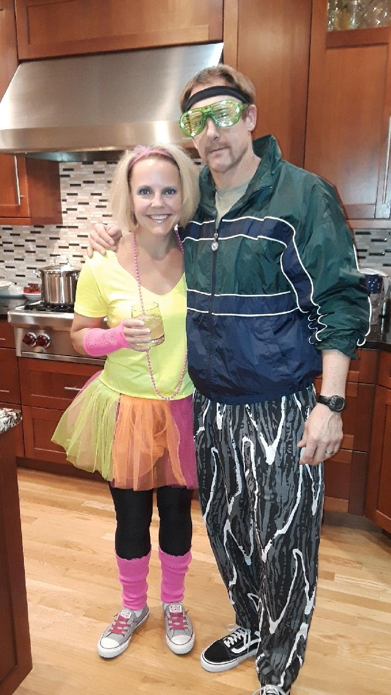
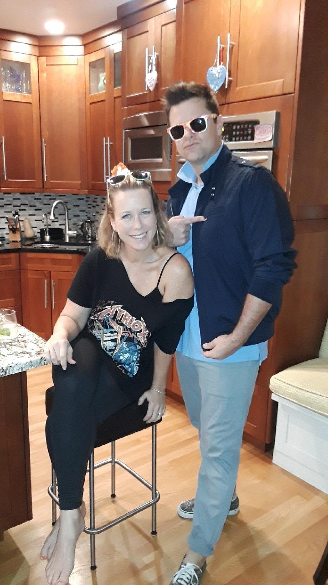
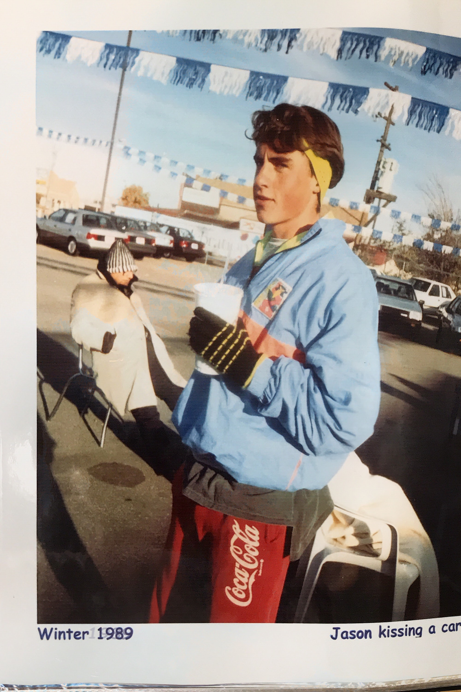

COVID 80s Night
Welcome to our COVID 80s night party! Join Zoom call.
1. 80s Music Quiz
You'll be working with your partner (but not Google!) to identify as many 1980s songs as possible from a drawing.
Go to this form after your hosts start the clock, which is taking the form of a nine-minute 1980's remix.
Winning couple receives a donation to the charity of their choice.
2. 80s Family Feud: Battle of the Sexes
You'll be working against your partner on this one: Women vs. Men.
We aren't going to be too prescriptive with the prize for this event, but would highly encourage members of the losing side to treat their partner with extra generosity this evening.



